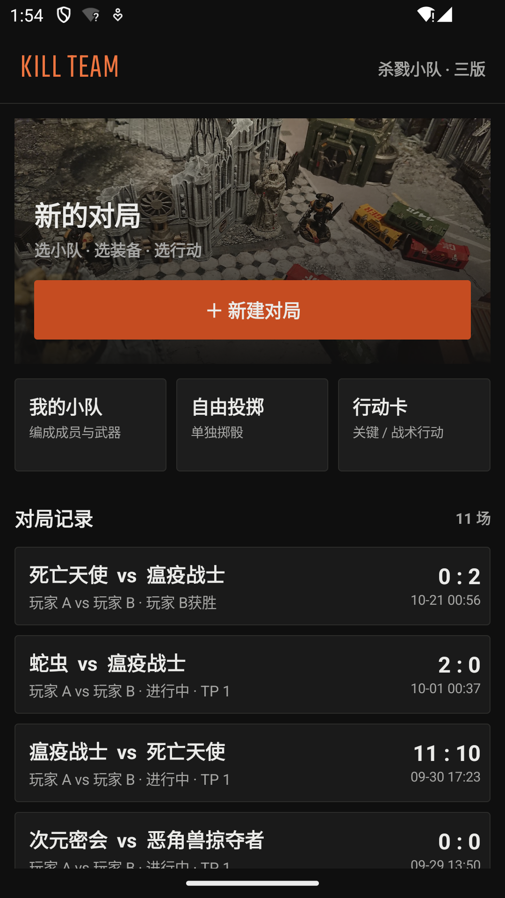
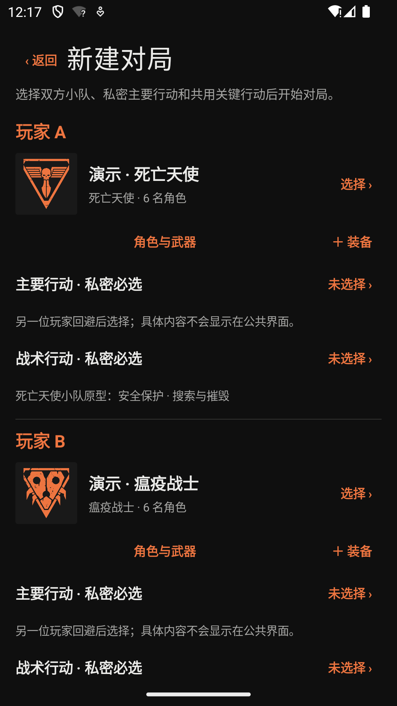
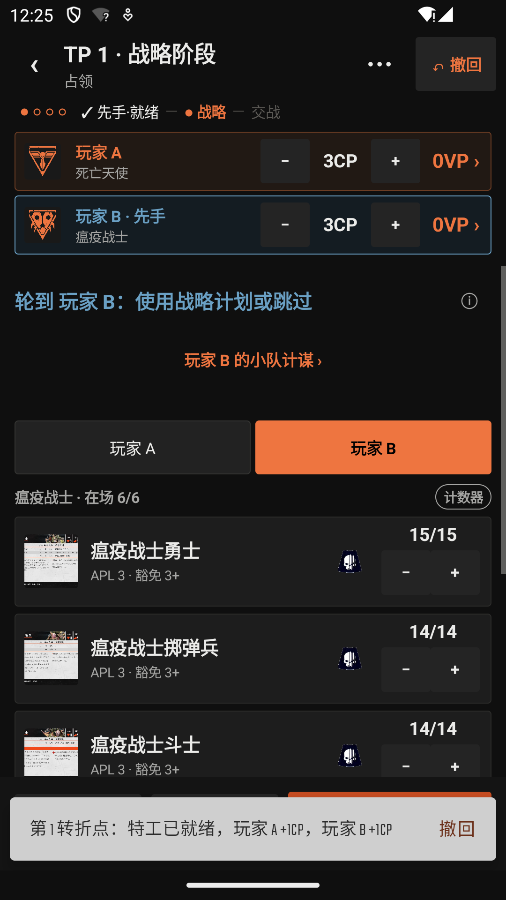
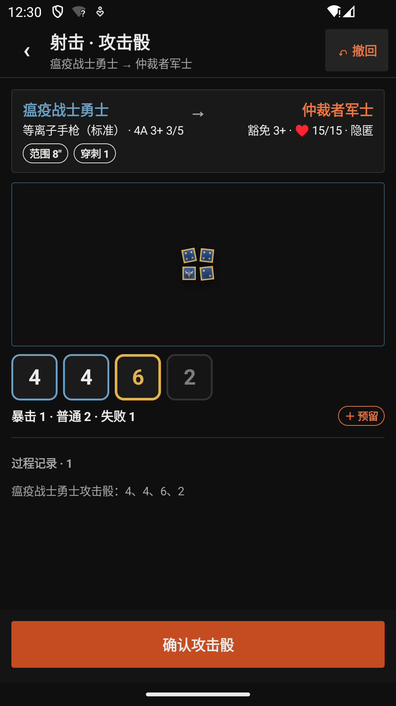
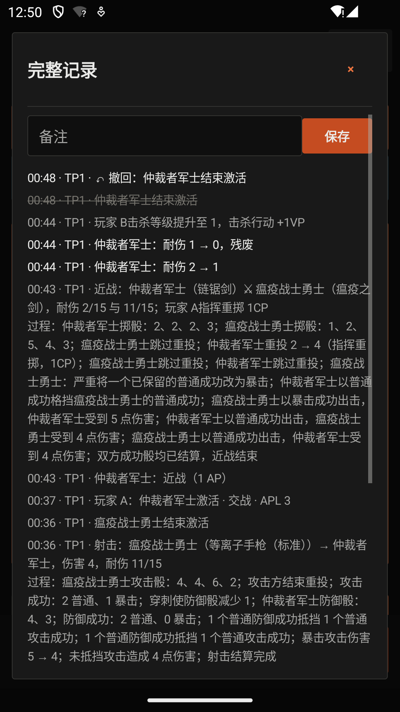
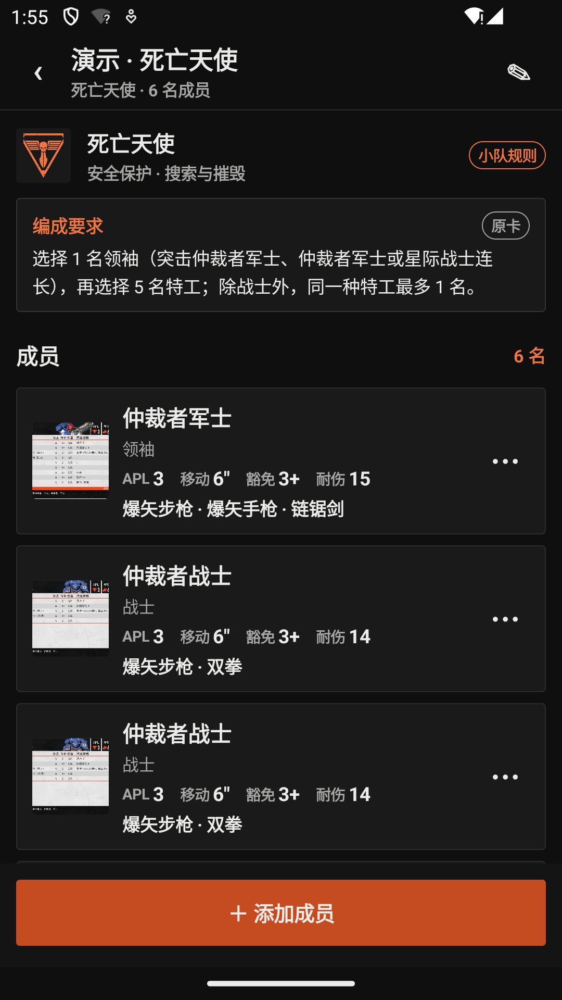
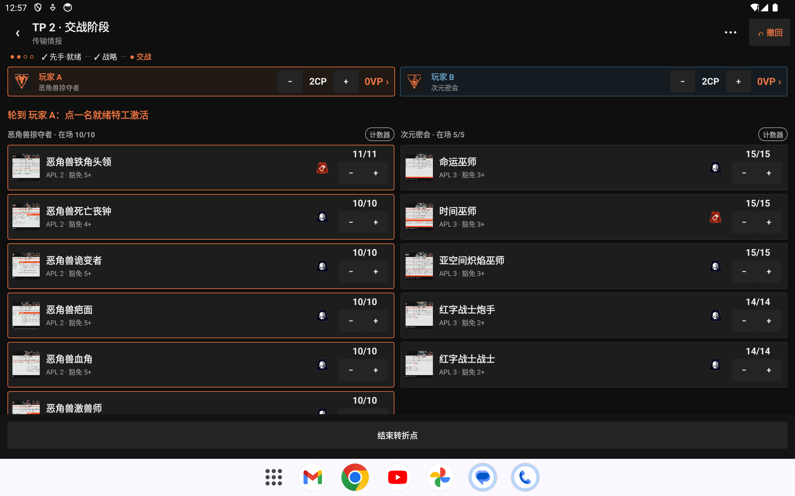
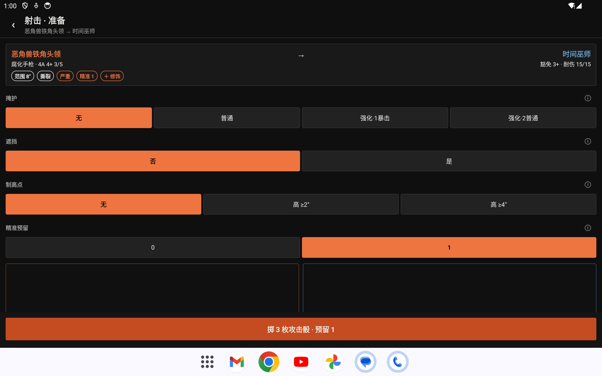

杀戮小队对局台
WHKT Battle Console · 版本 2.0 · Android 7.0+
一款为《战锤 40K：杀戮小队》完整双方对局设计的 Android 战术控制台。 从双方编成、任务与部署开始，记录四个转折点、CP、VP 与每名特工的状态； 原有攻防骰盘作为对局中的武器结算工具继续使用，投掷解析规则保持不变。 完全离线，无需账号或网络。
下载安装包
直接下载 APK，在 Android 设备上开启「允许安装未知来源应用」后安装即可。
主要能力
成对攻防流程
先投攻击骰并确认，再进入防御投掷，减少来回配置和误操作；防御阶段可启用掩体，并把一枚防御骰保留为普通成功。
完整对局记录
记录双方 CP、关键 / 击杀 / 战术 VP、主要行动加分与击杀等级，并跟踪每名特工的耐伤、命令、就绪 / 待机和残废状态。
四个转折点
按照认证行动 2025 流程引导双方完成战前设置、部署提示、先手权、战略阶段、交战阶段与最终结算，四个转折点全程可回溯。
双方小队卡库
一场对局直接选择双方已保存小队，无需先设置单一「当前小队」；角色与武器、阵营装备与计谋均可查阅。
武器带入骰盘
从任一方特工选择武器，直接把攻击骰、命中、伤害和关键字带入原骰盘；折叠关键字速查随时查阅「严重」「平衡／均衡」「震荡」等通用武器关键字。
响应式双端布局
手机一次只显示一个骰盘，以获得尽可能大的投掷空间，攻击完成后左右滑动查看攻击盘和防御盘；平板将两个骰盘并排同屏显示。
实体感投掷体验
骰子带有运动、碰撞、落定姿态和与动画同步的滚动碰撞音效；暗红赤铜攻击盘与深蓝冷钢防御盘采用不同轮廓与气氛，主题皮肤统一收纳在一个入口。
本地优先
自动保存当前对局和历史对局，保留可读时间线；投掷记录保存在设备本地，不绑定皮肤，无账号、无网络请求。
界面预览
手机端竖屏操作，平板端横屏同屏对局，两端共用同一套规则数据。








操作方式
| 操作 | 手机 | 平板 |
|---|---|---|
| 投掷当前骰子 | 在当前骰盘上滑 | 在当前阶段骰盘上滑 |
| 选择骰子 | 点击骰子 | 点击骰子 |
| 重投所选骰子 | 选中后上滑 | 选中后上滑 |
| 清空当前结果 | 双指下滑 | 双指下滑 |
| 查看另一骰盘 | 攻击确认后左右滑动 | 两个骰盘始终同屏 |
| 开始下一次对抗 | 点击「再次对抗」 | 点击「再次对抗」 |
运行要求
- Android 7.0（API 24）或更高版本
- 推荐横屏平板，或竖屏 Android 手机
- 无需账号、无需联网
- 约 130 MB 存储空间